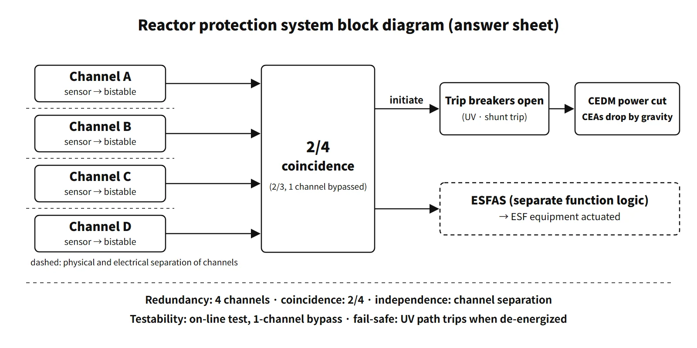

Systems & Equipment · C-SY-002
Reactor Protection System (RPS) and Plant Protection System (PPS) — Four-Channel 2-out-of-4 Coincidence Logic and Design Criteria
Four independent channels voted 2-out-of-4 open the trip breakers so the control rods fall by gravity, built to the single-failure, independence, testability and fail-safe criteria.
The reactor protection system (RPS) is a safety-class instrumentation and control system that opens the reactor trip breakers when a process variable reaches its trip setpoint, letting the control element assemblies fall by gravity, so that the specified acceptable fuel design limits (SAFDLs) and the reactor coolant pressure boundary limits are kept during anticipated operational occurrences. CE-type plants (OPR1000, APR1400) combine the RPS and the initiation functions of the engineered safety features actuation system (ESFAS) in a four-channel plant protection system (PPS).
Typical bases are IAEA SSR-2/1 Rev. 1 and, for example in the United States, GDC 20–25 of 10 CFR 50 Appendix A and 10 CFR 50.55a(h) (IEEE 603-1991).
Principle and mechanism
The signal chain: sense → compare → coincide → interrupt
| Stage | What it does | CE-type analog (OPR1000) | APR1400 digital PPS |
|---|---|---|---|
| Measurement channels | Four channels (A–D) independently measure the same variable | Transmitters, signal conditioning | Transmitters → cabinet of each channel |
| Bistable | Compares the measurement with the setpoint and outputs a trip when exceeded | Voltage comparator + trip relay (de-energized) | BP (bistable processor) |
| Coincidence logic | Checks for 2-out-of-4 agreement | One logic matrix per channel pair (AB, AC, AD, BC, BD, CD) | LCL processor (2/4 per function) |
| Initiation | Final actuation command | Initiation relays de-energize | Initiation logic output |
| Execution | Trip breakers open → CEDM power lost | Trip breakers (undervoltage and shunt trip coils) | RTSS (configuration differs by design and unit) |
In the analog CE design, when 2/4 is satisfied in any matrix, the matrix relay contacts de-energize the initiation relays, which open the trip breakers. When the CEDM power supplied from the MG sets is cut, the control rods fall by gravity. The ESFAS functions take the same bistable and 2/4 outputs and drive pumps and valves through the actuation logic of each train (A/B). In the APR1400, the ESFAS initiation signals from the LCL go to the ESF-CCS over safety-class high-speed links, and the ESF-CCS group controllers apply a selective 2/4 again.
![Signal chain of the APR1400 plant protection system example: four channels A to D, each with a transmitter and a bistable processor comparing to the setpoint, feeding local coincidence logic that applies 2-out-of-4 per function; one branch initiates the reactor trip, opens the RTSS breakers, removes CEDM power and lets the CEAs drop by gravity, the other initiates ESFAS through ESF-CCS group controllers with selective 2/4 to actuate safety injection, containment isolation, spray, main steam isolation and auxiliary feedwater; a table gives spurious and failed inputs tolerated by 1/4 (0 and 3), 2/4 (1 and 2), 4/4 (3 and 0) and 2/3 with one channel bypassed (1 and 1)](../../assets/images/concepts/c-sy-002-reactor-protection-system/fig1-pps-four-channel-logic.webp)
The RTSS configuration differs by design. OPR1000 and some APR1400 units use four trip switchgear breakers with selective 2/4, while the APR1400 standard design (US design certification) uses two sets of four (eight breakers) with full 2/4. The PPS uses the undervoltage trip coils of the breakers, and the DPS uses the shunt trip coils of the same breakers (DCD Tier 2 Rev. 3, 7.2.1.3).
Two kinds of bypass
- Channel (maintenance and test) bypass: the bypassed channel drops out of the logic and 2/4 becomes 2/3. Bypassing two channels at once is prevented by an interlock. Even in bypass, the reactor can still trip if one more of the remaining three channels fails to operate.
- Operating bypass: deliberately removes a trip in ranges where it would interfere with operation, such as startup or low power (e.g. pressurizer low pressure, high logarithmic power). It must be removed automatically when the permissive conditions are no longer met.
Trip variables (APR1400 example)
In the APR1400 digital protection system there are 11 functions besides the manual trip (15 including the per-steam-generator duplicates).
| Category | Trip functions |
|---|---|
| Power and core | Variable overpower (VOPT), high logarithmic power, high local power density (LPD, CPC), low DNBR (CPC) |
| Primary side | Pressurizer high pressure, pressurizer low pressure, low reactor coolant flow (steam generator differential pressure) |
| Secondary side | Steam generator low pressure, steam generator high level, steam generator low level |
| Containment | Containment high pressure |
The CPC takes the ex-core neutron flux, RCS temperatures and pressure, RCP speed and the CEA position deviation from the CEAC, calculates DNBR and LPD directly, and feeds its trip signals into the PPS bistables.
What it means in a plant
- Difference from Westinghouse plants: in a Westinghouse design, the outputs of the process protection channels (two to four) are voted 2/3 or 2/4 by two SSPS trains, which open the series trip breakers RTA and RTB (with bypass breakers BYA and BYB for testing). DNB and overpower are prevented not by a CPC but by the variable setpoints overtemperature ΔT (OTΔT) and overpower ΔT (OPΔT). OTΔT is corrected for Tavg, pressurizer pressure and axial flux difference to prevent DNB; OPΔT is corrected for Tavg, its rate of change and the flux difference to prevent fuel overpower (kW/ft).
- Trip breaker diversity: each breaker has both an undervoltage trip and a shunt trip. After the undervoltage trip devices failed and the automatic trip did not occur at Salem 1 in 1983, NRC GL 83-28 added automatic actuation of the shunt trip.
- A new issue with digitalization: a software common-cause failure could disable all four channels at once, so a diverse protection system (DPS) and manual functions are provided.
- Link to operation: trip setpoints enter the technical specifications as limiting safety system settings (LSSS), and the operability of protection channels is subject to LCOs.
Regulatory and design criteria
Internationally, IAEA SSR-2/1 Rev. 1 covers common-cause failures (Requirement 24), the single-failure criterion (25), fail-safe design (26) and I&C with separation of protection systems (59–62 and 64). In the United States, for example:
| Basis | Key point |
|---|---|
| GDC 20–25 | Function, reliability and testability, independence, failure modes, separation of protection and control, reactivity control malfunctions |
| 10 CFR 50.55a(h) | (h)(2) construction permits 1971–1999: IEEE 279 or 603-1991; (h)(3) applications after 13 May 1999: IEEE 603-1991 |
| IEEE 603-1991 | Clause 5: single failure, completion of protective action, quality, equipment qualification, independence, testing, information displays, access control; Clause 6: operating and maintenance bypasses, setpoints |
New plants have moved from analog matrices to digital PPS, and accordingly protection against software common-cause failure and the DPS have become key issues.
Easily confused pairs
| RPS | ESFAS | DPS | |
|---|---|---|---|
| Purpose | Protect SAFDLs and pressure in AOOs | Actuate engineered safety features in accidents | Back up against ATWS from common-cause failure |
| Final action | Trip breakers open → CEAs drop | Safety injection, containment isolation, spray, main steam isolation, auxiliary feedwater | Reactor trip, turbine trip, auxiliary feedwater |
| Logic | 2/4 | 2/4 → per-train actuation | Separate platform (separated from the protection system) |
| Class | Safety class | Safety class | Non-safety class (diversity) |
Coincidence logic is also easy to misread. 2/4 does not mean "trip when two channels fail"; it means "trip when two or more of the four channels of the same protective function are in the trip condition." Trips of different variables are not added together either. With 1/4, a single spurious signal causes a spurious trip; with 4/4, a single failed channel defeats the trip. 2/4 ignores one spurious signal while tolerating up to two channels that fail to operate.
Key points at a glance
- Definition: automatic reactor trip when a process variable reaches its setpoint; protects SAFDLs and RCS pressure limits during AOOs (GDC 20).
- Structure: four measurement channels → bistables → 2/4 coincidence logic → initiation → trip breakers → CEAs fall by gravity.
- APR1400 PPS: RPS + ESFAS initiation; BP and LCL processors; ESF actuation through the ESF-CCS; the CPC supplies DNBR and LPD trip inputs.
- Redundancy: four channels; minimum redundancy kept with one channel out of service.
- Independence: physical and electrical separation between channels; isolation of safety and non-safety.
- Diversity: different variables detect the same event; undervoltage + shunt trip; DPS.
- Coincidence: 2/4 — prevents spurious trips from a single false signal, still works with a single failure.
- Testability: overlapping on-line tests with a channel in bypass (2/3).
- Fail-safe: the undervoltage (UV) path trips when de-energized → loss of power = trip (the shunt trip operates when energized).
- Other: separation from control systems, completion of protective action, automatic removal of operating bypasses; standards IEEE 603-1991 and 50.55a(h).
